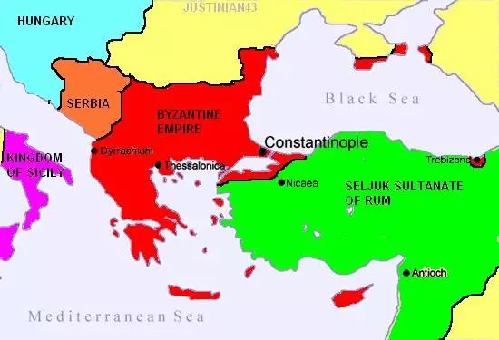
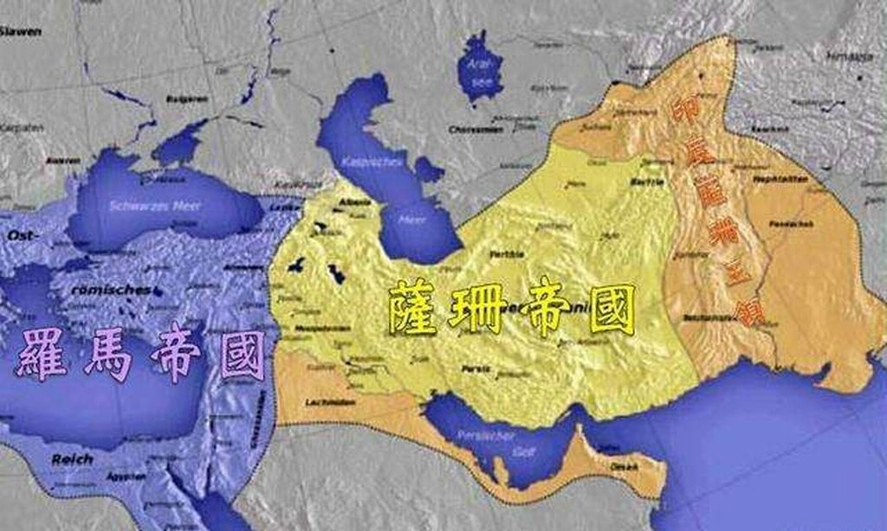

nuckle中世纪(妓_files/flag_new_5f5180c.png)
欧洲的中世纪一贯被看做是最黑暗的时期，充满了危险。当时社会生产力低下，人们的寿命很短，据估计当时的平均寿命还不到40岁，还随时都有可能遭受横死的风险。在那个时代，要比别人活得长，需要避开哪些可怕的人类杀手呢？...详情
相关新闻
内容来自nuckle中世纪(妓_files/logo_tashuo_274a010.png)
中世纪概念与观点
编辑中世纪概念
"中世纪"一词是15世纪后期的意大利人文主义者比昂多开始使用的。这个时期的欧洲没有一个强有力的政权来统治。封建割据带来频繁的战争，天主教对人民思想的禁锢，造成科技和生产力发展停滞，人民生活在毫无希望的痛苦中，所以中世纪或者中世纪早期在欧美普遍被称作“黑暗时代”，传统上认为这是欧洲文明史上发展比较缓慢的时期（关于其名称，也叫做Medieval Ages或Middle Times，也称之为Dark Ages）。
中世纪关于黑暗时代
中世纪时期经常被描绘成一个“无知和迷信的时代”，“宗教的言论置于个人经验和理性活动之上”。这是文艺复兴和启蒙运动留下来的遗产，在那个时候，学者们将他们的知识文化与中世纪时期的文化相对照。文艺复兴时期的学者把中世纪看作是文明衰落的时期；启蒙学者认为理性优于信仰，因此将中世纪视为无知和迷信的时代。事实上，关于中世纪的争论很多，曾经词语“黑暗时代”等同于“中世纪”，1904年后，这个术语更多的限于“中世纪早期“。
中世纪封建制度
中世纪史，也叫中古史，由于概念不同，对世界中古史的起讫年代的认识也不同。
封建制度的形成、发展和解体是这一时期欧洲历史的主线。但是世界各国封建社会的发展是不平衡的（注：这里的“封建社会”，是与“奴隶社会、资本主义社会”等相提并论的社会阶段，是马克思在研究欧洲社会发展过程提出的一套社会进化理论。但理论界对中国历史的封建社会分期有不同看法。有人认为中国周朝分封制是封建社会，秦以后到民国不是封建社会）。
中世纪黑暗时期
另外一种观点认为：一直到公元9世纪，绝大多数的近古（Late Antiquity）学者都按照圣奥古斯丁的观点，认为人类是处于历史的第六个阶段也是最后一个阶段，即《圣经》在“启示录”里预言的“末日”，故而有黑暗之意；一个被历史学家普遍接受的说法是，“中世纪黑暗时代”这个词，是由十四世纪意大利文艺复兴人文主义学者彼特拉克所发明的。他周游欧洲重新发掘和出版经典的拉丁和希腊著作，志在重新恢复罗马古典的拉丁语言、艺术和文化，对自公元四一零年罗马沦陷以来的变化与发生的事件，认为不值得研究。人文主义者看历史并不按奥古斯丁的宗教术语，而是按社会（学）的术语，即通过古典文化、文学和艺术来看待历史；所以人文主义者把这900年古典文化上发展的停滞时期称为“黑暗的时期”。
彼特拉克把欧洲历史分为两个阶段：一是古罗马与古希腊时期；二是“黑暗时期”。人文主义者也相信，总有一天罗马帝国会再次兴起，重新恢复古典文化的纯洁性。14世纪末与15世纪初，人文主义者们认为一个现代时期（Modern Age）已经开始了，所以从逻辑上来讲，一个“中世纪”已经形成了。
因此，自人文主义者起，历史学家们对“黑暗的时期”和“中世纪”也多持负面观点。在16世纪与17世纪时基督教新教徒的宗教改革中，新教徒也把天主教的腐败写进这段历史中。针对新教徒的指责，天主教的改革者们也给出了一幅与“黑暗的时期”相反的图画：一个社会与宗教和谐的时期，一点也不黑暗。而对“黑暗时期”，许多现代的负面观念是来自于17、18世纪启蒙运动中的康德和伏尔泰的作品中。
中世纪历史变迁
19世纪初，浪漫主义运动转变了这种对“黑暗的时期”负面观念一边倒的趋势。
它给出了一幅祥和的图画：社会和环境的和谐，扎根于大自然的生活；同时也回应启蒙运动中的理性主义以理性完全超越感性的作法，以及由正在兴起的工业革命所带来的环境破坏与污染。浪漫主义者对待“黑暗时期”的观点，仍可以在当今的一些庆祝那个时期文化活动与节日中，通过所展示出来的风俗与发生的历史事件中看到。
浪漫主义运动后的19世纪下半叶，考古学取得了很大的进展，许多不为以前的学者所知的历史文献与文物被挖掘和整理出来。而1939年发现的公元625年左右的萨顿骺（Sutton Hoo）宝窟，以及中世纪研究的著名学者查理哈斯金（Charles H. Haskins）的研究发现，使得“黑暗时期”看上去不再是一个合适的词汇。
中世纪时间特点
编辑中世纪早期
从古典时代晚期开始，一直到中世纪早期，人口减少，反城镇化，入侵和人民迁徙仍未停止。人们大规模迁徙。
中世纪中期
公元1000年后，随着技术和农业创新，贸易蓬勃发展，中世纪暖期气候变化使作物产量增加，欧洲人口大大增加。
中世纪晚期
中世纪晚期，饥荒，瘟疫和战争无处不在，欧洲人口被显著的削弱; 1347年到1350年，黑死病杀死了大约三分之一的欧洲人。天主教会内部的争议，分裂主义与州际冲突，内乱和农民起义四处横行。随着文化和科技的发展，欧洲社会发生了较大的改变，欧洲逐渐进入现代(欧洲三大传统划分下的现代，即Modern)
中世纪中世纪国家
编辑随着西罗马帝国被日耳曼人所灭，相继出现了一批蛮族国家。先后有西哥特王国、法兰克王国、东哥特王国、汪达尔王国、勃艮第王国、苏维汇王国、伦巴德王国、盎格鲁撒克逊等国建立。王国之间战争不断，其中盎格鲁撒克逊、法兰克王国存在的时间比较长。
随着法兰克王国不断的扩张，到了6世纪中叶，征服了勃艮第、图林根、巴伐利亚和萨克森的一些部落，成为当时西欧最强大的国家，并建立了封建采邑制。751年，宫相矮子丕平成为法兰克国王，建立了加洛林王朝。在查理大帝统治期间国力达到最盛，吞并了伦巴德王国，夺取西班牙边区，占领东巴伐利亚，征服阿瓦尔汗国，西欧的大部分土地都成为了法兰克王国的领土。查理大帝死后，法兰克王国发生兄弟战争而分裂，在843年8月签订《凡尔登条约》经国家分为西法兰克王国、中法兰克王国和东法兰克王国，现代的法兰西、意大利和德意志的疆域就是以这个条约为基础的。
829年，威塞克斯王国吞并了其他6个王国，从此诞生了英格兰（England）。1066年，法国诺曼底公爵威廉以亲属关系要求继承王位，遭到拒绝后，发生了黑斯廷斯战役，以武力夺取了英王之位，称为“征服者威廉”（即威廉一世），并建立了诺曼王朝，后来法国国王的外孙继承了英国王位，但是这也造成了日后英法两国王室为法国王位的继承权而进行的百年战争的根源。
1264年的内战期间，亨利三世被西门·德·孟福尔俘虏。
1265年孟福尔召集国会，成为英国议会的开端。
从1343年起，国会分成了由贵族组成的上院和代表骑士、市民的下院，确立了议会君主制。与此同时，西法兰克王国演变成了法兰西王国，并加强了王权，罗马教廷被迫迁往法国南部的阿维农，并自上而下召开三级会议（一级为高级教士，二级为贵族，三级为富裕的市民），也形成了议会君主制。
德国的前身东法兰克王国，王权衰落，地方诸侯政权很强大。911年东法兰克的加洛林王朝绝嗣之后，原本应该由法国王室派人继任德国的国王，但是此时德国受到东部的外来侵略，因此地方权贵相互选出一名公爵作为盟主代替国王，这诞生了后来的德国选王制，选王一般自称“凯撒”，由选帝侯从诸侯中选出，人选不一定是德国诸侯，也可以是外国（无王位只有爵位的）诸侯，比如法国伯爵、意大利伯爵或者卢森堡等低地国家的公爵，在中国常常译作“皇帝”或者“国王”，更多是名誉，选王的权利和地方诸侯平等。这个特点被历史学家认为是其热衷于对外扩张的原因。
1155年腓特烈一世攻占米兰，教宗为其加冕，成为神圣罗马帝国，全盛时领土包括了德意志全境，意大利中、北部，西西里岛，捷克、瑞士、爱沙尼亚、普鲁士。腓特烈一世遭到15个城市联合抵抗（即伦巴第联盟），并被打败。腓特烈一世在第三次十字军东征时溺水而死，占领区也纷纷独立。
中世纪文化
编辑意大利一直不能统一，罗马教皇为了保持自己的独立地位，建立了教皇国，并且伪造了《君士坦丁赠礼》文件，声称当年君士坦丁大帝把罗马城，拉特兰宫等地交给了教皇。教会统治非常严厉，并且控制了西欧的文化教育。教士不能结婚，主张禁欲，要求人们将一切献给上帝才能死后上天堂，另一方面圣职买卖现象又很严重。宣扬三位一体、原罪说等经院哲学，严格控制科学思想的传播，并设立宗教裁判所惩罚异端，学校教育也都是为了服务于神学。在教皇格里高利一世（公元590年 ~公元604年）时期，古罗马图书馆也被付之一炬。
11~13世纪为中世纪文化发展的巅峰时期。13世纪末，意大利产生了文艺复兴运动，并扩展到欧洲很多国家。这时涌现出了许多哲学家、文学家、艺术家和科学家，像但丁、薄伽丘、列奥纳多·达·芬奇、米开朗基罗、拉斐尔、马基雅维利、莎士比亚、塞万提斯、哥白尼、布鲁诺、伽利略、开普勒、哈维、弗兰西斯·培根等等。
中世纪经济
编辑中世纪军事
编辑在欧洲的封建社会里，国王、贵族和骑士等大大小小的封建主构成了金字塔般的等级制度，但是他们的权力和义务都是有限的，“我的附庸的附庸不是我的附庸”，这种复杂的等级关系使得欧洲封建国家长期处在割据状态，和东方中国“普天之下，莫非王土；率土之滨，莫非王臣”的中央集权的封建君主专制大不一样。
各国统治者仍不断进行战争，相互抢掠吞并，许多国家一直没有出现稳固的统一政权。封建地主凭借土地所有权和政权对农民进行剥削。在欧洲，基督教会已成为封建统治工具，他们和世俗封建主共同维护封建制度。农民和农奴的劳动被封建主以劳役、实物地租、名目繁多的捐税和教会“什一税”等形式侵吞。农民的反抗持续不断，但是没有像中国那样发生过多次推翻了一个王朝的大规模农民战争。
中世纪的战争，是由组织散漫的战斗团，在需要运用策略和调动的战场上互相对峙、冲突，然后再一步一步演进而来。演进中的一个部分，反应在不同的兵种和武器的发展上，以及如何去运用它们。黑暗时代的早期军队，是一群没有组织的徒步士兵。当重骑兵兴起后，最好的军队就是一群没有组织的骑士。
徒步士兵会对沿途的农田造成破坏，在攻城战时则会造成更大的打击。当两军对峙时，重骑兵往往会被布置在军队前列、轻骑兵在两翼，步兵与弓兵在后（中世纪大阵）。在战斗开始后重骑兵会率先对敌军阵型发起冲锋。重骑兵冲锋的威力是巨大的，数次成功的冲锋便可以彻底撕裂敌军阵型。不过，在混战的时候，骑士们会试图与他们的敌人作一对一的交战，而徒步士兵又会夹在敌我双方的骑士之间。这种战法其实非常危险，因为中古时代早期的徒步士兵，大部分都是在封建制度下被征召的农民，并未受过作战训练。弓兵在攻城战上十分适用，但在战场上也一样冒着被消灭的危险。
到了14世纪后期，指挥官加强了骑士的纪律，使他们的军队更能发挥团队的合作。但是在英国的军队里，尽管长弓兵在很多的战场上证明了他们的价值，可是骑士并未给予这些射手太多的重视。纪律也让越来越多的骑士为报酬作战，罕有为忠诚和光荣作战者。在意大利的雇佣兵以长期作战但少有损伤而闻名。在这个时期，各阶级的士兵都是军队的资产，不会被轻易遗弃。这使得过去追求光荣的封建军队，逐步成为只关心他们会收取多少报酬的专业军队。
骑兵会被特别地划分为三支队伍或三个部分，然后一队接一队衔命作战。第一波的攻击会突破或冲散敌军，接着第二或第三波的攻击就能加以制服。敌军一旦逃走，就可以予以杀戮或俘虏。
事实上，骑士如果采取个人行动，对任何指挥官的计划都是很大的伤害。骑士最关心的是忠诚、光荣和骑乘在一流队伍的第一行列位置。为争取个人光荣，在战场上获得全面的胜利反而沦为其次。在战场上开始作战之后，不用多久骑士就会攻击他们所看到的敌人，如此一来便破坏了整体作战计划。
指挥官在必要时把麾下骑士自马上卸下，是控制他们的最佳手段。这是小型军队普遍采用的方式，因为这些骑士很少会期望在作战中表现。卸阵下来的骑士可以适时加强战斗力量，并提振一般徒步军队的士气。这些骑士和其余徒步士兵，会被用在减缓敌骑冲锋的标桩、或其他战地工事的后方作战。
1346年的克雷西战役，是骑士不遵守纪律行为的一个例子。当时法国的军队在数量上超过英国的军队(四万对一万)，并且拥有非常多的骑士。英国人把长弓兵分成三个队伍，在标桩的防护下投入战场。在这三个队伍之间的，是两队卸下马的骑士，而第三队卸下马的骑士则被保留作预备军。法国国王亦将麾下骑士组编为三个部分，并且指派热那诺斯的雇佣弓兵去射击英国的骑士，但因弓弩被弄湿而起不了作用。
此外，法国骑士又忽视法王在组织上的努力，在开战不久后，一见敌军就立刻狂怒不已，张口一遍又一遍地喊着：“杀啊！杀啊！”由于法国国王忍受不了热那诺斯人一再箭上失准，便命令骑士前进，并击倒在他们前面的热那诺斯弩兵。这场战斗持续了一整天，最后由英国的骑士和长弓兵(他们保持了其弓弦的干燥)打败了那些骑着马匹但作战时毫无纪律、乱成一团的法国骑士。
到了中古时代末期，重骑兵在战场上的价值不如以往，几与投射部队和徒步军队无异。在这个时期，人们已经了解何以审慎部署的攻击仍然失效的原因以及训练步兵的重要。作战的规则改变了，标桩、马匹陷阱和壕沟都常常被军队用作防护工具，以抵抗骑兵的攻击。如果骑兵对大批各个等级的长枪兵和弓兵(或枪炮手)作出攻击的话，只会产生一大堆受创的马匹和骑兵。骑士会被迫徒步作战，或等待适当的攻击时机。只有敌军在移动、混乱、或从临时的战地防御工事中走出来的情况下，毁灭性的攻击才能奏效。
中世纪宗教
编辑 中世纪的《圣经》
中世纪的《圣经》
中世纪演变
基督教诞生于广大的希腊-罗马世界宗教动荡，经济巨变时期。这一时期，社会从对国教的希腊-罗马诸神的传统信仰之中获得的安全感正在消退，伊西斯（Isis）、密特拉（Mithras）、西布莉（Cybele）、无敌太阳（Sol Invictus）以及诺斯替主义（Gnosticism）和基督教等新生教派正在取代传统神祇。这些新生教派不仅互相竞争，也互相融合吸收彼此的教义与宗教仪式。同时，它们的基本信念却又惊人的一致：现世因充斥邪恶而终将消亡；人生而有罪故当远离世俗，在永恒的精神领域内熏陶自我，才能获得无尽的福佑。因此，它们不仅在实践上采取不同程度的禁欲主义，并同时相信存在一个救世主，甘愿以生命为代价为信徒们换取死后的永生。这种思潮不仅限于宗教，也作用于当时哲学领域内的新柏拉图主义和新毕达哥拉斯主义。某些哲学学派甚至扮演了宗教的角色，试图引导追随者们通过与神合一达到救赎的目的。
在那个传统诸神信仰走向末路的时刻，人们渴望与一位世界的统治者——具有人格属性的唯一的神之间建立一种亲密的个人联系。许多人开始相信，来自唯一神的直接启示能够使他们克服世界的恶。于是，形成了大量具有排他性团体，不约而同的谋划着自身独有的救赎计划。基督教即其中之一。
基督教在希腊-罗马世界内缓慢地扩张着。在公元后的第一个世纪内，使徒保罗在希腊世界内取得了成功，才使得基督教在形成后首次扩张到耶路撒冷以外的世纪。直到公元300年后，基督教才真正扩张到罗马帝国的全境。313年，君士坦丁一世颁布米兰敕令，规定基督教在法律上与帝国境内其他宗教享有完全平等的权力。392年，狄奥多修皇帝关闭了所有异教寺庙，禁止异教崇拜，否则将以叛国论处。从兴起到392年，经过差不多4个世纪，基督教的缓慢的、和平的扩张终于获得了胜利。正是这种看似缓慢但很坚实的渗透，使得基督教可以适应周边的异教世纪，而早期的基督教徒们是无法预见到自己的宗教将会扮演怎样的角色。
基督教在其渗透过程以及胜利后的很长一段时间内所受周边异教学术的影响而做出的诸多重大调整在许多学识渊博的基督徒那里都有所体现。他们的著作对后世产生了深远的影响。
中世纪对科学的影响
自从公元312年君士坦丁宣布合法化基督教后，基督徒就从被迫害者变为迫害者。他们敌视一切不合乎圣经的东西，包括部分新思想及科学等。历史上就有很多伟大的思想家及科学家被基督徒迫害。到中世纪，更出现罗马教廷的“宗教裁判所”及加尔文的“宗教法庭”等合法机构迫害所谓的“异端”。但在另一方面，教会也相当重视古代知识的传承以及教育，欧洲有许多大学是在教廷资助下建立的。
2、坚持哥白尼“日心说”的布鲁诺，先被投入监狱，当他听完宣判后，面不改色地对这伙凶残的刽子手轻蔑地说：“你们宣读判决时的恐惧心理，比我走向火堆还要大得多。”后于1600年2月17日在罗马鲜花广场被烧死。
3、希柏提亚（375-415）是史上第一个为人所知的女数学家。爱德华·吉本在《罗马帝国衰亡史》中叙述时说：“她由车上被拉下来，剥脱衣服到一丝不挂，被拖至教堂，为一群野蛮而无人性的狂徒，用尖利的蚝将她的肉由骨上剥削下来，手脚砍下，抛掷火焰之中。
4、伽利略：意大利著名物理学家、天文学家。因捍卫科学真理，于1633年被宗教裁判所迫害，1642年不幸病逝，其时已双目失明。
5、科学家帕利西因说化石是动物的遗体而不是“造物主的游戏”，被“宗教裁判所”判处死刑。
6、塞尔维特在《基督教信仰的复兴》一书中提出血液循环的见解，被烤两个多小时后死去。
8、阿莫里：巴黎大学教授，1210年，因宣扬泛神论被死后追审，墓穴被挖，十个弟子全部被处决。
9、西克尔：巴黎大学教授，因在物理研究上有所谓异端言论，被教会活活打死。
中世纪疾病流行
编辑中世纪第一次
第一次大流行称为查士丁尼瘟疫，共有两次，发生在540年~590年。并没有明确的数字统计多少人因此死亡，不过一般相信这个疫病导致东地中海约2500万人死亡。这场瘟疫衰弱了拜占庭帝国，查士丁尼企图恢复罗马帝国光荣的梦想也因此失败。
中世纪第二次
老鼠引起的黑死病在1346年到1350年大规模袭击欧洲，导致欧洲人口急剧下降，患者死亡率高达100%。黑死病被认为是蒙古人带来的。约1347年，往来克里米亚与墨西拿（西西里岛）间的热内亚贸易船只带来了被感染的黑鼠或跳蚤，不久便漫延到热内亚与威尼斯，1348年疫情又传到法国、西班牙和英国，1348年~1350年再东传至德国和斯堪的纳维亚，最后在1351年传到俄罗斯西北部。估计欧洲有约2500万人死亡，而欧、亚、非洲则共约5,500万~7,500万人在这场疫病中死亡。当时无法找到治疗药物，只能使用隔离的方法阻止疫情漫延。此后在十五、十六世纪黑死病多次再次侵袭欧洲；但死亡率及严重程度逐渐下降。
有人认为，这场黑死病严重打击了欧洲传统的社会结构，削弱封建与教会势力，间接促成了后来的文艺复兴与宗教改革。
中世纪中古骑士
编辑中世纪名词释义

训练一个男孩成为骑士需时14年。在这段期间，受训的男孩最初要跟随领主夫人担任侍童，学习礼仪；之后要学习“骑士七艺”（游泳、投枪、击剑、骑术、狩猎、弈棋、诗歌），又要为领主或负责训练他的骑士工作。成为骑士后，他要遵行“侠义精神”，例如效忠国王或领主、保护教会和妇孺、锄强扶弱以及奋勇作战等。
在中古时代，骑士除了为领主或国王作战外，在每年的某段日子还需参与一些竞技活动。这些竞技活动都有特别的名称：
两个骑士在马背上，以比武用骑枪（lance）将对方击落马的竞技称为“马上比武”，马上比武用骑枪和盔甲都与实战的款式不同，比武用骑枪多半是用无尖的皇冠状或杯型枪头，且枪身采用空心或刻划出沟槽（容易折断）的白杨木，盔甲在左胸也有特别强化的金属板好抵抗冲击，比武用的马鞍亦没有后桥，使骑士受击后容易摔落，有时候一方落地比赛仍要以其他武器互殴，直到一方死亡、失去意识或是投降，投降或失去意识一方将会变成赢家的俘虏，家属得要支付赎金才可将其赎回。
两组以上的骑士进行上述的竞技活动称为“比武大会”。
这些竞技活动，最早出现的用意是国王为了将贵族们调动到身边来就近监视，亦可藉此保持骑士的战斗素质。
中世纪受封过程
成为骑士是每一个中古男孩的梦想，其受封仪式一开始仅仅是简单地以剑轻拍受施者的右肩并予以授名，但随着时间的过去，此一过程渐渐变的却十分艰苦。以下是一个中古男孩要成为骑士的过程。
1、首先，要出生于中古时代欧洲的贵族家庭。在七岁时，其将被送到另一个骑士家里作侍童（page），以学习各种骑士的礼仪。在十四岁那年，将成为侍从（squire），接受各种训练及学习“侠义精神”。
2、到了21岁时，他已准备成为一位骑士。在受封为骑士之前，首先要洁净自己，然后穿上白色的衣服及红色袍子：白衣表示自身的洁净，红袍喻意准备随时勇战受伤。
3、穿好衣服后，要禁食一天，拿着剑在盾牌面前向上帝祷告，祷告内容包括求神宽恕己罪，圣洁己身，承诺保护教会及发誓“除强扶弱”，此时，任何不认同将获得骑士身份的侍从的人，皆可去破坏盾牌，侍从必须以剑捍卫其盾牌。
4、最后，将送到授与者的面前。授与者会放平其剑，按在其右肩上，有时候会有一种无剑尖的慈悲之剑来专门进行此仪式，施以祝福。这样便完成受封仪式，他亦正式成为骑士。
极少时候，侍从也会因为在战斗中的英勇表现，而在战场上被册封。
中世纪教会的影响
编辑中世纪文献上
各大小修院都保有相当数量的书籍，在隐修院中以本笃会为最。各托钵休会也有大量藏书，并且不断抄写加以扩大。
中世纪教育上
修道院的学校是那个动荡年代最安全的教育组织，并且有虽然水平不很高，但有很负责的教师。他们发展了传统的七艺教育，开创了早期的大学。
中世纪思想上
保存并发展了希腊哲学中以亚里士多德为主的学说，“经院主义”虽然繁琐，但却使得形式逻辑更加精致，为后来思想的发展做了准备。唯名论和唯实论之争保存并发展了唯物主义和唯心主义斗争之火。
中世纪艺术上
通过宗教音乐，古代曲调被保存，新的音乐理论和方法得到缓慢但坚实的发展。建筑技法被保留，新的建筑艺术和技术在宗教建筑中体现出来。强调激烈情感和深刻体验的绘画雕塑艺术发展出来。
中世纪其他定义
编辑14世纪意大利文艺复兴人文主义学者彼特拉克周游欧洲重新发掘和出版经典的拉丁和希腊著作，志在重新恢复源本罗马古典的拉丁语言，艺术和文化，对自公元四一零年罗马沦陷以来的变化与所发生的，即通过古典文化，文学和艺术来看待历史。
中世纪绘画19世纪初， 浪漫主义运动转变了这种对“黑暗的时期”负面一边倒的趋势。
浪漫主义运动后的19世纪下半叶，考古学取的了很大的进展。
20世纪中叶以后，在英语国家中的专业学者文献里，“黑暗时期”这个词渐渐地消失。查理哈斯金写道：“历史的连续性排除了中世纪与文艺复兴这两个紧接着的历史时期之间有巨大差别的可能性，现代研究表明，中世纪不是曾经被认为的那么黑，也不是那么停滞；文艺复兴不是那么亮丽，也不是那么突然。意大利文艺复兴运动之前，有一个类似的运动，即便它不是那么广传。所以，原来的“中世纪黑暗时期”现被改为专指公元410年（或455年）到公元754年（或800年）这段欧洲历史。
词条图册
更多图册
-
-
2018-01-19761
-
nuckle中世纪(妓_files/overlay_543bb29.png)
为什么神圣罗马帝国能延续千年而没有彻底分裂？
2018-03-31614 -

地中海岛屿上的骑士王国：一部浓缩的中世纪简史
2017-08-16430 -

中东三国杀—这场百年战争，让一个宗教意外兴起，席卷亚欧非
2019-08-05321
-
nuckle中世纪(妓_files/overlay_543bb29(1).png)


nuckle中世纪(妓_files/perfect_b3eae1e.png "优质版本")
nuckle中世纪(妓_files/create_c3f33b6.png "创建版本")